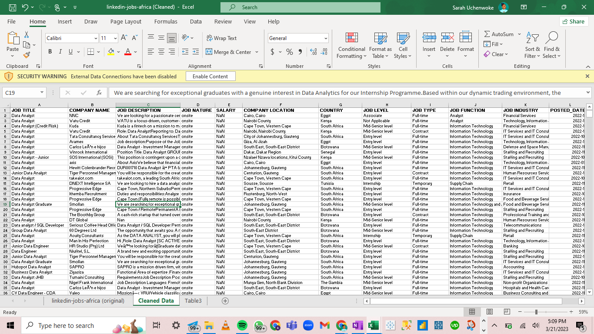
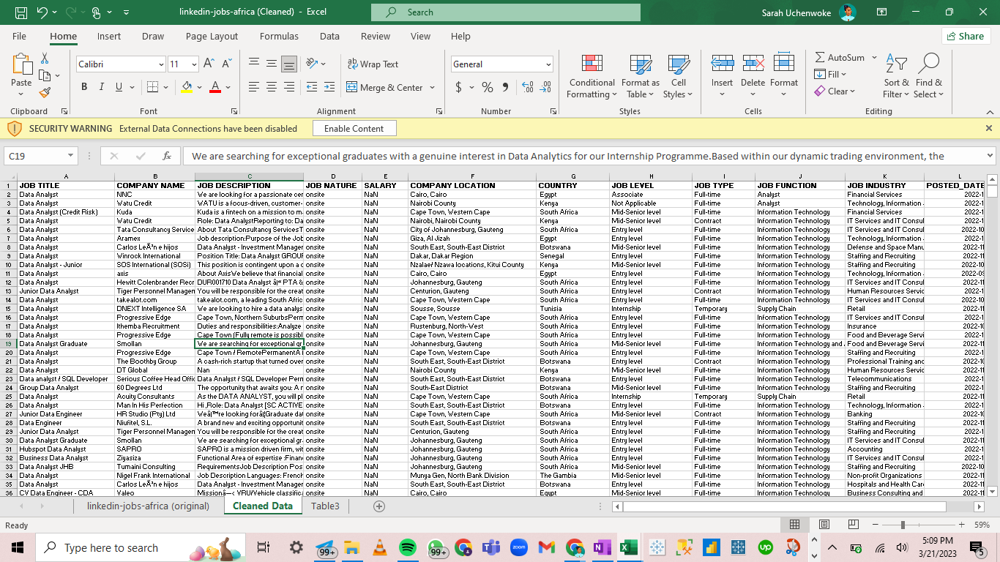
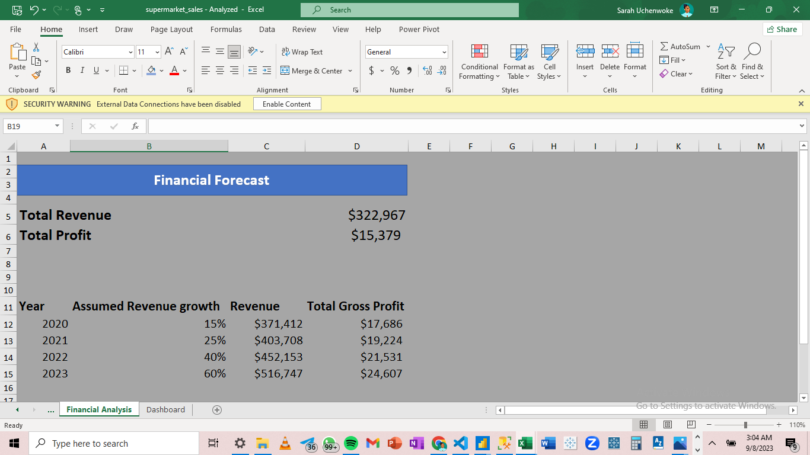

In this project, I took a journey through the business data of a mart company
in the USA
with branches in four regions of the country.
I discovered pretty interesting insights about the sales and profit perfromance of the company
in various products and sub-categories different states of the US using SQL
 

In this project, I cleaned and got rid of irrelevancies and incoherent information in a LinkedIn job dataset using MS Excel. I also made use of MS Excel data transformation tool, Power Query in this project to ensure that the data is coherent and reliable for further analysis. Enjoy!

In this project, I took the business data explored in SQl for clear visualization of insights in Tableau. I made use of charts, maps and other visualization methods to practically show the discoveries in the data in a fun way that anyone can understand. Here, boring data comes to life. This project is unique because i told two parts of the story of the data; the sales part of the data story and the profit part. Enjoy!

As a BI Analyst, part of my job is turning boring, bulky data into fun data stories using visualization tools. In this project, I visualized previously cleaned data about property sales in New York in MS Excel. I used Excel's pivot tables to discover the insights in this data before putting them into charts to aid easy and better understanding of its information. Enjoy!

SQL is a very useful tool to carry out the ETL process in data preparation and pipeline processes. In the project, a housing dataset is cleaned and prepared for analysis in SQL. I populated empty records, removed duplicates, changed data format and wrote several other data manipulation queries to ensure the data is reliable for analysis. Enjoy!

Power Business Intelligence like the name implies is a great tool for business intelligence analysis and data visualization. In this project, the housing dataset cleaned in SQL is imported into Power BI. I wrote a few DAX statements and then created visualizations with some of the statements. The final result is a dashboard showing interestings insights abut the data. Enjoy!

In this project, I wrote some formulas to predict the financial growth of a company in four years using the company's current financial situation. Financial forecasting is essential to help business make strategic decisions essential to the business growth.